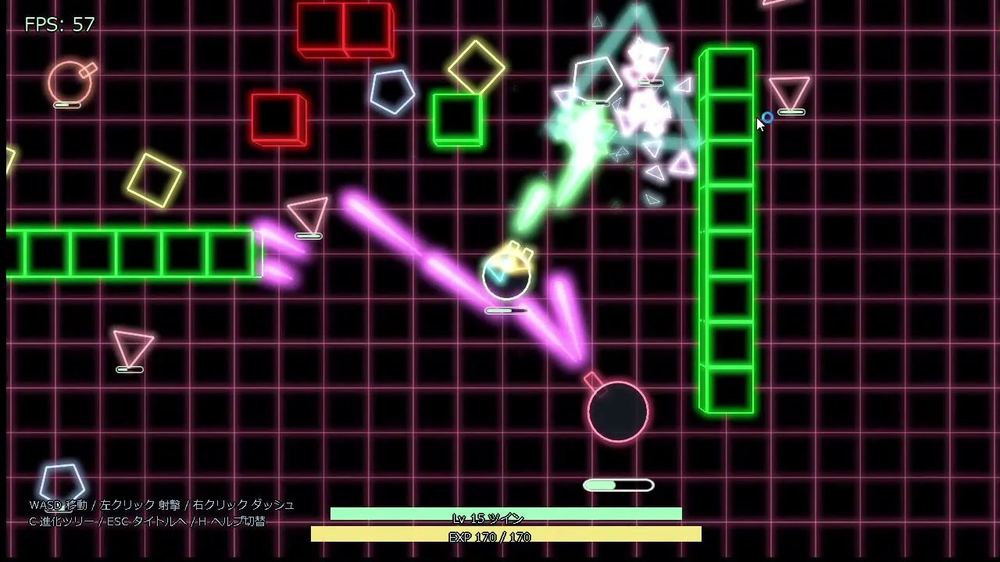
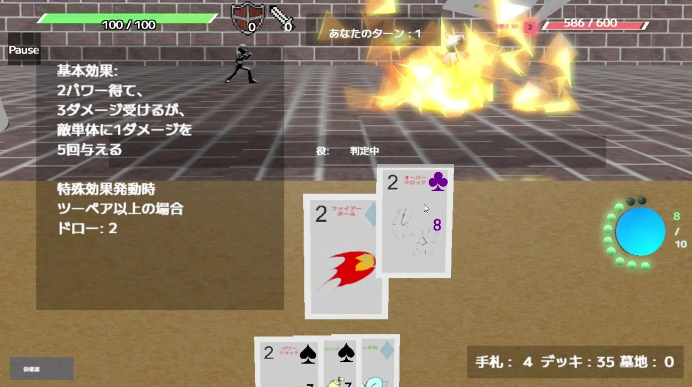
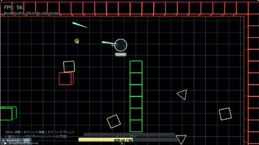
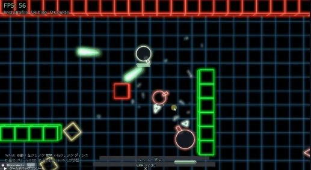
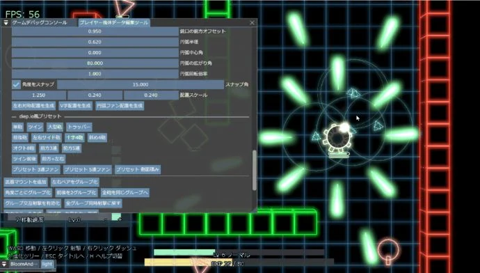

個人制作FEATURED PROJECT
たたかうせんしゃ
見下ろし型ローグライトアクション
進路を選び、強化を組み合わせ、最深部のボスを目指す。シューター・ドローン・近接の３つの戦闘スタイルで攻略する戦車アクションです。
- 制作範囲
- 設計・プログラム全般
- 開発環境
- C++20 / DirectX 12 / Windows
- 取り組み
- ゲームプレイ・描画・調整ツール
GAME DEVELOPMENT PORTFOLIO
C++ / DirectX 12によるゲーム制作。
描画表現を実装するだけでなく、
ゲームの中での役割と、遊びやすさを考えています。

掲載画像は過去の開発記録です。現在のゲーム画面とは異なります。
01 / SELECTED WORK
個人制作とチーム制作。
ゲームの特徴と、自分の取り組みを紹介します。
個人制作FEATURED PROJECT
見下ろし型ローグライトアクション
進路を選び、強化を組み合わせ、最深部のボスを目指す。シューター・ドローン・近接の３つの戦闘スタイルで攻略する戦車アクションです。
チーム制作 / ４人02 / TEAM PROJECT
カードで戦い、場に残ったカードでポーカーの役をそろえるカードバトル。チームの中で、GPUパーティクルとポストエフェクトを担当しました。
担当 GPUパーティクル・ポストエフェクト
環境 自作エンジン / DirectX 12

ゲーム全体はチーム制作です。ここでは自分の担当であるGPUパーティクルとポストエフェクトに関連する画面を掲載しています。
02 / BEHIND THE GAME
何を実装したかだけでなく、
ゲームの中でどう使うか。
MY APPROACH
技術を動かして満足するのではなく、ゲームの中でどう役立つかまで考えたい。
見た目の印象とともに、敵弾や攻撃予告の読みやすさ、操作の邪魔にならないことを大切にしています。
RENDERING → GAMEPLAY
3Dネオン表示を、プレビューだけでなく本編のボスに組み込みました。戦闘側の位置・照準・HP・行動状態を表示側へ渡し、攻撃の予告や撃破後の消失を連動させています。
戦闘判定は従来の2D処理を基準に残し、描画側から戦闘状態を書き換えない構成にしています。見た目と戦闘処理を分離し、表示の追加がゲームのルールまで変えてしまわないようにしました。
本編統合の記録へPRESERVE THE GAMEPLAY
この構造の説明と、「弾や予告が実際に読みやすいか」という視認性の評価は分けて考えます。
使用3Dモデル：VRoid Project / AvatarSample_B。モデル制作そのものではなく、描画・状態連携・本編への組み込みを紹介しています。


DEVELOPMENT TOOLS
武器・発光・敵・HUDなどの値をImGuiで変更し、JSONへ保存・読み込み。調整のたびにコードを書き換えて再ビルドする手間を減らす仕組みです。
調整ツールの実装へ
03 / ABOUT
GAME PROGRAMMING STUDENT
C++ / DirectX 12を中心に、個人制作とチーム制作に取り組んでいます。ゲームの仕組みから描画表現、制作中の調整ツールまで、動かして確かめながら制作しています。